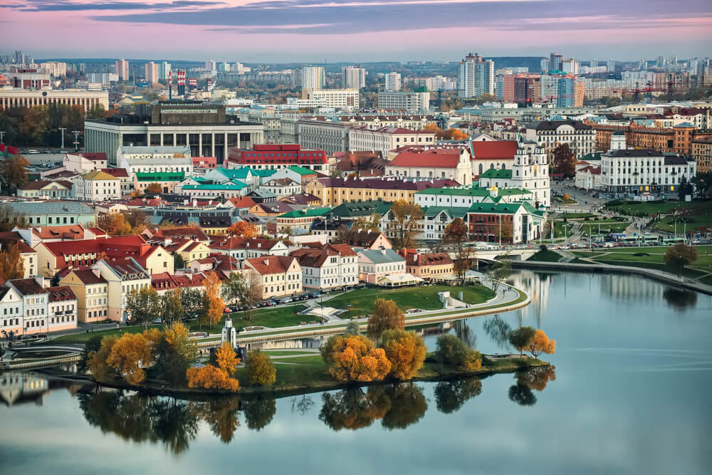

Незабываемый отдых
Найдите время для путешествий
Найдите время для путешествий

 9. САН-ТОМЕ И ПРИНСИПИ
9. САН-ТОМЕ И ПРИНСИПИ
Тоже сходу и не скажешь где это. Остров находится в Гвинейском заливе близ африканского Габона. Бесконечно зелёное местечко, здесь понравится любителям необычного и экзотического отдыха. Сюда тянет огромный национальный парк Обо, Голубая лагуна и гора Пико Кэо Грандэ. Но для посещения острова надо сделать несколько прививок.

8. БЕЛАРУСЬ
Вот это да! Смягчение визового режима привлекло туристов со всего света. У отдыха в этой стране два направления: городское и оздоровительное. Минск сильно преобразился за последние годы. стал чище, дружелюбнее и веселее. А про белорусские оздоровительные санатории ходят легенды во всей Европе.
 7. ИНДОНЕЗИЯ
7. ИНДОНЕЗИЯ
Помним, что Индонезия — это не только Бали. Это и Джакарта, Баликпапан, Макассар, Западная новая Гвинея и ещё множество городов и островов. Не ограничивайтесь чем-то одним, Индонезию исследовать и исследовать!
6. ИОРДАНИЯ
Всё больше туристов едет в Амман познакомиться с иорданской культурой. Именно в этой стране и находится кусочек Марса — красная пустыня Вади Рам, где снимался не один космический фильм. Но смотреть — одно, побывать там — совсем другое. Зато смело можно говорить друзьям, что вы были на Марсе!
5. КЫРГЫЗСТАН
Чего-чего, а гор здесь хоть отбавляй. Поэтому скучно не будет — природа потрясающая. Начинайте знакомство с Бишкека, затем езжайте вглубь к озеру Иссык-Куль, Караколу, а оттуда двигайтесь в сторону одноимённого ущелья. Красота невероятная и определённо стоит вашего отпуска.
 4. ПАНАМА
4. ПАНАМА
Ещё одна страна, переходящая из Центральной Америки в Южную. С одной стороны Коста-Рика, с другой Колумбия. Многих привлекает то, что в один день вы купаетесь в Карибском море, а на другой уже плещетесь в Тихом океане. Если пляжный отдых не для вас, записывайтесь на пешие экскурсии, ведь посмотреть есть на что! На территории есть небольшие горы, различные вулканические остатки, исторические развалины, где раньше прятались пираты.
3. ЗИМБАБВЕ
Ещё один африканский уголок. Хоть здесь и нет моря, зато сколько видов животных! Чтобы на всех посмотреть, отправляйтесь в заповедники на сафари. Здесь же стометровый водопад Виктория. Всё как в мультике про короля льва. И не беспокойтесь о здоровье. Для посещения страны не обязательно делать прививки, достаточно пить таблетки от малярии и носить вещи с длинным рукавом.
2. ГЕРМАНИЯ
Без Европы никак нельзя, да и почему нет? В разносторонней Германии есть всё: горы, выход к двум морям, строгая архитектурная и развязная весёлая культура, даже есть свой фестиваль воздушных шаров и Чёрный лес из сказок про Красную шапочку.
1. ШРИ-ЛАНКА
А вот и безоговорочный фаворит списка! Сёрфинг, закаты, чай, свежайшие фрукты, йога, океан и ещё раз сёрфинг. Отказаться от такого отдыха сложно, да и не нужно совсем. Просто берите билеты :)